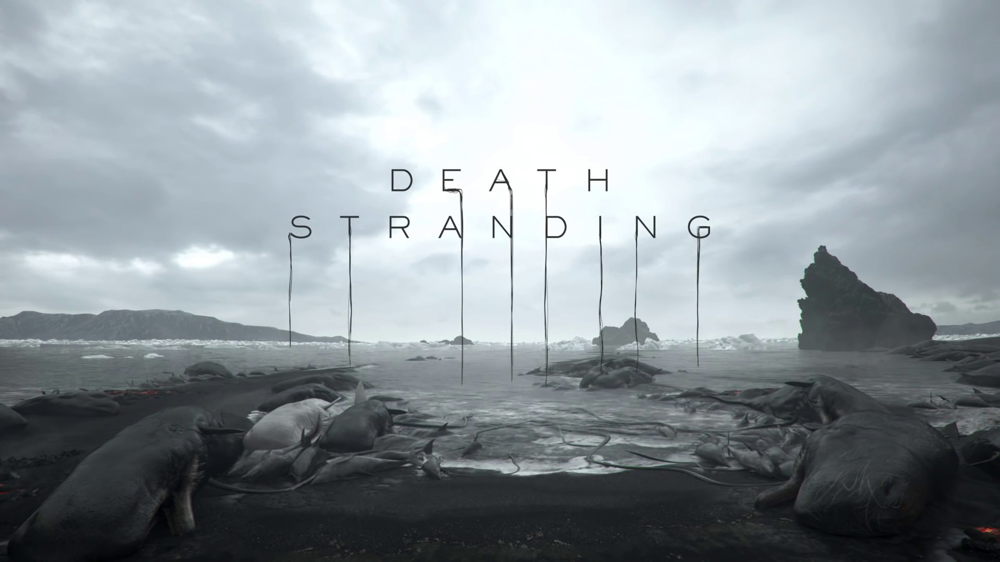
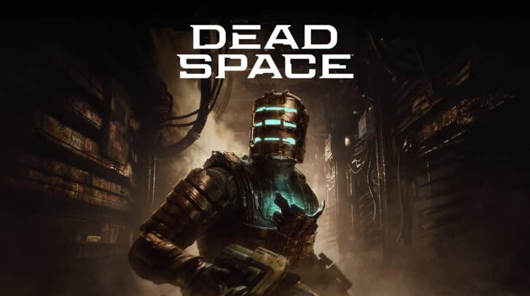

Imagem com logos enigmáticas esquenta rumores de Death Stranding 2

No verdadeiro estilo “Hideo Kojima”, o game designer japonês publicou uma imagem
enigmática
nas
redes sociais que muitos especulam estar relacionada à Death Stranding 2.
Ao contráriodas
últimas
ocasiões, onde publicou silhuetas de atrizes, aqui é possível
ver três logos diferentes,
acompanhadas da mensagem “comece uma nova jornada”.
Continuar lendo
Jogo chega ao status "gold" e não deve mais ser adiado

A EA Motive tem um belo motivo para comemorar. Isso porque, a empresa anunciou
que o desenvolvimento
do remake de Dead Space está concluído. Agora em estado “gold”
, o título será enviado às fábricas,
para a produção em massa das cópias físicas.
A informação foi divulgada no Twitter oficial da desenvolvedora e veio acompanhada
de um GIF que
celebra a conquista. Na postagem, a companhia também agradece a todos
os fãs que seguem ansiosos
para a estreia — e não é pra menos, afinal, a comunidade
ajudou na produção com feedbacks
constantes.
Continuar lendo